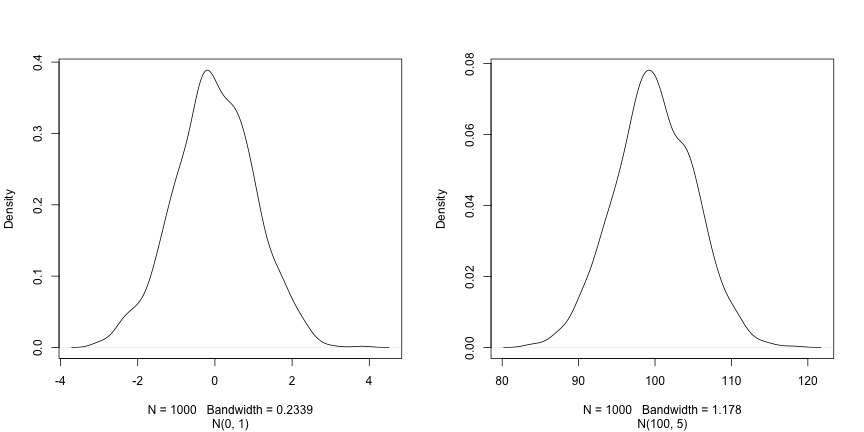

R 入门
最后更新于 2026-11-07 | 编辑此页
预计用时： 120 分钟
概述
问题
- R 的初步命令
学习目标
- 定义与 R 相关的以下术语：对象、赋值、调用、函数、参数、选项。
- 为 R 中的对象赋值。
- 学习如何为对象命名
- 使用注释为脚本提供说明。
- 在 R 中执行简单的算术运算。
- 调用函数并使用参数来更改其默认选项。
- 检查向量的内容并对其内容进行操作。
- 从向量中提取子集并提取值。
- 分析包含缺失数据的向量。
本节基于 Data Carpentries 的 Data Analysis and Visualisation in R for Ecologists 课程。
在 R 中创建对象
您只需在控制台中输入数学表达式，即可获得 R 的输出结果：
R
3 + 5
输出
[1] 8R
12 / 7
输出
[1] 1.714286然而，为了实现实用且有趣的操作，我们需要为对象赋予值。要创建一个对象，我们需要为其命名，随后加上赋值运算符
<- 以及我们想要赋予的值：
R
weight_kg <- 55
<-
是赋值运算符。它将右侧的值赋给左侧的对象。因此，执行
x <- 3 后，x 的值就是
3。这个箭头可以理解为 3 进入
x。出于历史原因，你也可以使用 =
进行赋值，但并非在所有场景下都适用。由于语法上存在细微差别，建议始终使用
<- 进行赋值。
在 RStudio 中，输入 Alt + -（在按下
- 键的同时按下 Alt）即可在 PC 上一次按键写入
<-，而输入 Option + -（在按下
- 键的同时按下 Option）则在 Mac
上实现同样的效果。
命名变量
对象可以使用任何名称，例如
x、current_temperature 或
subject_id。建议对象名称要明确且不要过长。名称不能以数字开头（2x
无效，但 x2 有效）。R
区分大小写（例如，weight_kg 与 Weight_kg
不同）。某些名称因是 R 的基本函数名称而不能使用（例如
if、else、for，完整列表请参阅 R
中的保留字
手册页）。通常情况下，即使允许使用，最好也不要使用其他函数名称（例如
c、T、mean、data、df、weights）。如有疑问，请查看帮助文档以确认该名称是否已被占用。此外，最好避免在对象名称中使用点号（如
my.dataset 中的 .）。出于历史原因，R
中有许多函数名称包含点号，但由于点号在
R（用于方法）和其他编程语言中具有特殊含义，因此最好避免使用。同时建议对对象名称使用名词，对函数名称使用动词。保持代码格式的一致性（如空格的位置、对象的命名方式等）至关重要。使用一致的编码风格能让你未来的自己和合作者更清晰地阅读代码。在
R 中，一些常用的风格指南包括 Google 的、tidyverse 的 风格以及 Bioconductor
风格指南。tidyverse
的指南非常详尽，起初可能会让人感到不知所措。你可以安装 lintr
包，以自动检查代码格式是否存在问题。
对象与变量：在
R中被称为objects的内容，在许多其他编程语言中则被称为variables。根据上下文的不同，object和variable的含义可能截然不同。不过，在本节课中，这两个词被互换使用。欲了解更多信息，请参阅此处。
在为对象赋值时，R 不会输出任何内容。你可以通过使用括号或直接输入对象名称来强制 R 输出该值：
R
weight_kg <- 55 # doesn't print anything
(weight_kg <- 55) # but putting parenthesis around the call prints the value of `weight_kg`
输出
[1] 55R
weight_kg # and so does typing the name of the object
输出
[1] 55现在 R 的内存中已经有了
weight_kg，我们可以对其进行算术运算。例如，我们可能想将这个重量转换为磅（磅重量是公斤重量的
2.2 倍）：
R
2.2 * weight_kg
输出
[1] 121我们还可以通过赋值新值来更改对象的值：
R
weight_kg <- 57.5
2.2 * weight_kg
输出
[1] 126.5这意味着为一个对象赋值不会改变其他对象的值。例如，让我们将动物的重量（单位为磅）存储在一个新对象
weight_lb 中：
R
weight_lb <- 2.2 * weight_kg
然后将 weight_kg 更改为 100。
R
weight_kg <- 100
挑战：
你认为对象 weight_lb 目前的内容是什么？126.5 还是
220？
注释
R 中的注释符号是 #，脚本中 #
右侧的任何内容都将被 R 忽略。在脚本中留下备注和说明非常有用。
RStudio 让注释或取消注释段落变得简单便捷：选中想要注释的行后，同时按下键盘上的 Ctrl + Shift + C。如果你只想注释一行，可以将光标置于该行的任意位置（即无需选中整行），然后按下 Ctrl + Shift + C。
挑战
以下每条语句后的值分别是什么？
R
mass <- 47.5 # mass?
age <- 122 # age?
mass <- mass * 2.0 # mass?
age <- age - 20 # age?
mass_index <- mass/age # mass_index?
函数及其参数
函数是“预设脚本”，用于自动化更复杂的命令集，包括运算赋值等。许多函数是预定义的，或者可以通过导入
R 包（稍后详述）来使用。函数通常接收一个或多个称为
参数 的输入。函数通常（但并非总是）返回一个
值。一个典型的例子是函数
sqrt()。输入（参数）必须是一个数字，而返回值（实际上就是输出）则是该数字的平方根。执行函数（“运行”它）被称为
调用 该函数。函数调用的一个示例如下：
R
b <- sqrt(a)
这里，a 的值被传递给 sqrt()
函数，sqrt() 函数计算平方根并返回该值，随后将该值赋值给对象
b。这个函数非常简单，因为它只接收一个参数。
函数的返回“值”不必是数值（如 sqrt()
那样），也不必是单一项：它可以是一组内容，甚至是一个数据集。我们在将数据文件读入
R 时将看到这一点。
参数可以是任何内容，不仅限于数字或文件名，还可以是其他对象。每个参数的具体含义因函数而异，必须在文档中查阅（见下文）。某些函数接收参数，这些参数可以由用户指定，或者在未指定时采用默认值：这些被称为选项。选项通常用于改变函数的运行方式，例如是否忽略“错误值”，或者在绘图中使用哪个符号。不过，如果你需要特定的设置，可以指定一个自定义值来替代默认值。
让我们试试一个可以接收多个参数的函数：round()。
R
round(3.14159)
输出
[1] 3这里，我们仅传递了一个参数 3.14159 调用了
round()，它返回了值
3。这是因为默认行为是舍入到最接近的整数。如果我们需要更多位数，可以通过获取关于
round 函数的信息来了解如何实现。我们可以使用
args(round)，或者使用 ?round
查看该函数的帮助信息。
R
args(round)
输出
function (x, digits = 0, ...)
NULLR
?round
我们可以看到，如果想要不同的位数，可以输入 digits=2
或任何想要的位数。
R
round(3.14159, digits = 2)
输出
[1] 3.14如果你按照定义顺序提供参数，则无需为其命名：
R
round(3.14159, 2)
输出
[1] 3.14而且，如果你为参数命名，就可以调换它们的顺序：
R
round(digits = 2, x = 3.14159)
输出
[1] 3.14在函数调用中，将必需参数（例如要舍入的数字）放在前面，并指定所有可选参数的名称，这是一个良好的实践。否则，阅读你代码的人可能需要查阅具有不熟悉参数的函数定义，才能理解你在做什么。通过指定参数名称，你还可以防范函数接口未来可能发生的变更，因为现有参数之间可能会增加新参数。
向量与数据类型
向量是 R 中最常见且最基础的数据类型，几乎是 R
的主力。向量由一系列值（如数字或字符）组成。我们可以使用
c()
函数将一系列值赋给向量。例如，我们可以创建一个动物体重向量，并将其赋给一个新对象
weight_g：
R
weight_g <- c(50, 60, 65, 82)
weight_g
输出
[1] 50 60 65 82向量也可以包含字符：
R
molecules <- c("dna", "rna", "protein")
molecules
输出
[1] "dna" "rna" "protein"这里 “dna”、“rna” 等字符串周围的引号至关重要。如果没有引号，R
会认为存在名为 dna、rna 和
protein 的对象。由于这些对象在 R
的内存中并不存在，因此会出现错误消息。
有许多函数可以让你检查向量的内容。length()
会告诉你某个特定向量中包含多少个元素：
R
length(weight_g)
输出
[1] 4R
length(molecules)
输出
[1] 3向量的一个重要特点是，所有元素都属于同一类型的数据。函数
class() 用于表示对象的类（元素类型）：
R
class(weight_g)
输出
[1] "numeric"R
class(molecules)
输出
[1] "character"str()
函数可提供对对象及其元素结构的概览。在处理大型且复杂的对象时，这是一个非常有用的函数：
R
str(weight_g)
输出
num [1:4] 50 60 65 82R
str(molecules)
输出
chr [1:3] "dna" "rna" "protein"您可以使用 c() 函数向向量中添加其他元素：
R
weight_g <- c(weight_g, 90) # add to the end of the vector
weight_g <- c(30, weight_g) # add to the beginning of the vector
weight_g
输出
[1] 30 50 60 65 82 90在第一行中，我们取原向量 weight_g，在其末尾添加值
90，并将结果保存回
weight_g。然后，我们在开头添加值
30，同样将结果保存回 weight_g。
我们可以重复此操作来扩展向量，或构建数据集。在编程过程中，这对于添加我们正在收集或计算的结果会很有用。
原子向量是最简单的 R
数据类型，是单一类型的线性向量。上面我们看到了 R 使用的
6 种主要 原子向量 类型中的 2
种："character" 和 "numeric"（或
"double"）。这些是所有 R 对象构建的基本构建块。另外 4 种
原子向量 类型为：
-
"logical"用于TRUE和FALSE（布尔数据类型） -
"integer"表示整数（例如2L，其中L告知 R 这是一个整数） -
"complex"用于表示具有实部和虚部的复数（例如1 + 4i），关于它们我们仅此而已。 -
"raw"用于后续不讨论的位流
您可以使用 typeof()
函数并将向量作为参数输入，来检查向量的类型。
向量是 R
使用的众多数据结构之一。其他重要的数据结构还包括列表
(list)、矩阵 (matrix)、数据框
(data.frame)、因子 (factor) 和数组
(array)。
挑战：
我们已经看到，原子向量可以是字符型、数值型（或 double 型）、整数型和逻辑型。但如果我们尝试在同一个向量中混合使用这些类型，会发生什么呢？
R 会隐式地将它们全部转换为同一种类型
挑战：
在这些示例中会发生什么？（提示：使用 class()
检查对象的数据类型，并输入其名称以查看结果）：
R
num_char <- c(1, 2, 3, "a")
num_logical <- c(1, 2, 3, TRUE, FALSE)
char_logical <- c("a", "b", "c", TRUE)
tricky <- c(1, 2, 3, "4")
R
class(num_char)
输出
[1] "character"R
num_char
输出
[1] "1" "2" "3" "a"R
class(num_logical)
输出
[1] "numeric"R
num_logical
输出
[1] 1 2 3 1 0R
class(char_logical)
输出
[1] "character"R
char_logical
输出
[1] "a" "b" "c" "TRUE"R
class(tricky)
输出
[1] "character"R
tricky
输出
[1] "1" "2" "3" "4"挑战：
你认为这是为什么会发生？
向量只能具有一种数据类型。R 会尝试转换（强制转换）该向量的内容，以找到一种不会丢失任何信息的共同类型。
挑战：
在以下示例中，combined_logical 中有多少个值是
"TRUE"（作为字符）：
R
num_logical <- c(1, 2, 3, TRUE)
char_logical <- c("a", "b", "c", TRUE)
combined_logical <- c(num_logical, char_logical)
只有一个。系统不记忆之前的数据类型，强制转换发生在向量首次求值时。因此，num_logical
中的 TRUE 在被 combined_logical 转换为
"1" 之前，会先被转换为 1。
R
combined_logical
输出
[1] "1" "2" "3" "1" "a" "b" "c" "TRUE"挑战：
在 R 中，我们将对象从一个类转换为另一个类的过程称为强制转换。这些转换遵循一种层级结构，其中某些类型会优先被强制转换为其他类型。你能绘制一张图表来展示这些数据类型强制转换的层级关系吗？
逻辑 → 数值 → 字符 ← 逻辑
向量子集提取
如果我们想从向量中提取一个或多个值，必须在方括号内提供一个或多个索引。例如：
R
molecules <- c("dna", "rna", "peptide", "protein")
molecules[2]
输出
[1] "rna"R
molecules[c(3, 2)]
输出
[1] "peptide" "rna" 我们还可以重复索引，以创建一个比原对象包含更多元素的对象：
R
more_molecules <- molecules[c(1, 2, 3, 2, 1, 4)]
more_molecules
输出
[1] "dna" "rna" "peptide" "rna" "dna" "protein"R 的索引从 1 开始。Fortran、MATLAB、Julia 和 R 等编程语言从 1 开始计数，因为这是人类的常规做法。C 语言家族（包括 C++、Java、Perl 和 Python）从 0 开始计数，因为这对计算机来说更简单。
最后，还可以使用负索引来获取向量中除某些指定元素之外的所有元素：
R
molecules ## all molecules
输出
[1] "dna" "rna" "peptide" "protein"R
molecules[-1] ## all but the first one
输出
[1] "rna" "peptide" "protein"R
molecules[-c(1, 3)] ## all but 1st/3rd ones
输出
[1] "rna" "protein"R
molecules[c(-1, -3)] ## all but 1st/3rd ones
输出
[1] "rna" "protein"条件子集选取
另一种常见的子集选取方式是使用逻辑向量。TRUE
将选取索引相同的元素，而 FALSE 则不会：
R
weight_g <- c(21, 34, 39, 54, 55)
weight_g[c(TRUE, FALSE, TRUE, TRUE, FALSE)]
输出
[1] 21 39 54通常，这些逻辑向量并非手动输入，而是其他函数或逻辑测试的输出结果。例如，如果你想仅选择大于 50 的值：
R
## will return logicals with TRUE for the indices that meet
## the condition
weight_g > 50
输出
[1] FALSE FALSE FALSE TRUE TRUER
## so we can use this to select only the values above 50
weight_g[weight_g > 50]
输出
[1] 54 55您可以使用 &（两个条件均为真，AND）或
|（至少有一个条件为真，OR）来组合多个测试：
R
weight_g[weight_g < 30 | weight_g > 50]
输出
[1] 21 54 55R
weight_g[weight_g >= 30 & weight_g == 21]
输出
numeric(0)这里，< 表示“小于”，>
表示“大于”，>= 表示“大于或等于”，==
表示“等于”。双等号 ==
用于测试左侧和右侧的数值是否相等，不应与单个 =
符号混淆，后者用于变量赋值（类似于 <-）。
一个常见的任务是在向量中搜索特定字符串。可以使用“或”运算符
| 来检查是否等于多个值，但这很快会变得繁琐。函数
%in% 允许你检查搜索向量的任何元素是否被找到：
R
molecules <- c("dna", "rna", "protein", "peptide")
molecules[molecules == "rna" | molecules == "dna"] # returns both rna and dna
输出
[1] "dna" "rna"R
molecules %in% c("rna", "dna", "metabolite", "peptide", "glycerol")
输出
[1] TRUE TRUE FALSE TRUER
molecules[molecules %in% c("rna", "dna", "metabolite", "peptide", "glycerol")]
输出
[1] "dna" "rna" "peptide"挑战：
你能想出为什么 "four" > "five" 会返回
TRUE 吗？
R
"four" > "five"
输出
[1] TRUE在对字符串使用 > 或 < 时，R
会比较它们的字母顺序。这里，"four" 排在 "five"
之后，因此大于它。
名称
可以为向量的每个元素命名。下面的代码块展示了一个最初没有名称的向量，以及如何设置和检索名称。
R
x <- c(1, 5, 3, 5, 10)
names(x) ## no names
输出
NULLR
names(x) <- c("A", "B", "C", "D", "E")
names(x) ## now we have names
输出
[1] "A" "B" "C" "D" "E"当向量带有名称时，除了通过索引外，还可以通过名称访问其元素。
R
x[c(1, 3)]
输出
A C
1 3 R
x[c("A", "C")]
输出
A C
1 3 缺失数据
由于 R
旨在分析数据集，因此它包含了缺失数据的概念（这在其他编程语言中并不常见）。在向量中，缺失数据用
NA 表示。
在对数值进行运算时，如果处理的数据中包含缺失值，大多数函数都会返回
NA。这一特性使得人们更难以忽略处理缺失数据的情况。您可以添加参数
na.rm = TRUE，以在忽略缺失值的情况下计算结果。
R
heights <- c(2, 4, 4, NA, 6)
mean(heights)
输出
[1] NAR
max(heights)
输出
[1] NAR
mean(heights, na.rm = TRUE)
输出
[1] 4R
max(heights, na.rm = TRUE)
输出
[1] 6如果您的数据包含缺失值，您可能需要熟悉
is.na()、na.omit() 和
complete.cases() 这几个函数。示例请参阅下文。
R
## Extract those elements which are not missing values.
heights[!is.na(heights)]
输出
[1] 2 4 4 6R
## Returns the object with incomplete cases removed.
## The returned object is an atomic vector of type `"numeric"`
## (or `"double"`).
na.omit(heights)
输出
[1] 2 4 4 6
attr(,"na.action")
[1] 4
attr(,"class")
[1] "omit"R
## Extract those elements which are complete cases.
## The returned object is an atomic vector of type `"numeric"`
## (or `"double"`).
heights[complete.cases(heights)]
输出
[1] 2 4 4 6挑战：
- 使用这组以英寸为单位的身高向量，创建一个去除 NA 值的新向量。
R
heights <- c(63, 69, 60, 65, NA, 68, 61, 70, 61, 59, 64, 69, 63, 63, NA, 72, 65, 64, 70, 63, 65)
- 使用函数
median()计算heights向量的中位数。 - 使用 R 计算该集合中身高超过 67 英寸的人数。
R
heights_no_na <- heights[!is.na(heights)]
## or
heights_no_na <- na.omit(heights)
R
median(heights, na.rm = TRUE)
输出
[1] 64R
heights_above_67 <- heights_no_na[heights_no_na > 67]
length(heights_above_67)
输出
[1] 6生成向量
构造函数
有一些函数可用于生成不同类型的向量。若要生成数值向量，可以使用
numeric()
构造函数，并将输出向量的长度作为参数提供。其值将被初始化为 0。
R
numeric(3)
输出
[1] 0 0 0R
numeric(10)
输出
[1] 0 0 0 0 0 0 0 0 0 0请注意，如果我们请求一个长度为 0 的数值向量，我们将恰好得到该向量：
R
numeric(0)
输出
numeric(0)针对字符和逻辑值也有类似的构造函数，分别命名为
character() 和 logical()。
挑战：
字符向量和逻辑向量的默认值是什么？
R
character(2) ## the empty character
输出
[1] "" ""R
logical(2) ## FALSE
输出
[1] FALSE FALSE复制元素
rep
函数可以将某个值重复指定次数。例如，如果我们想初始化一个长度为 5 且值为
-1 的数值向量，可以这样做：
R
rep(-1, 5)
输出
[1] -1 -1 -1 -1 -1同样地，若要生成一个包含缺失值的向量（这通常是一个很好的起点，且无需对待采集的数据设定任何假设）：
R
rep(NA, 5)
输出
[1] NA NA NA NA NArep
可以接收任意长度的向量作为输入（上述示例中使用了长度为 1
的向量），且支持任何类型。例如，如果我们想将值 1、2 和 3
重复五次，可以这样做：
R
rep(c(1, 2, 3), 5)
输出
[1] 1 2 3 1 2 3 1 2 3 1 2 3 1 2 3挑战：
如果我们想将值 1、2 和 3 重复五次，但希望按此顺序获得五个 1、五个 2
和五个 3 呢？有两种可能 —— 请参阅 ?rep 或
?sort 以获取帮助。
R
rep(c(1, 2, 3), each = 5)
输出
[1] 1 1 1 1 1 2 2 2 2 2 3 3 3 3 3R
sort(rep(c(1, 2, 3), 5))
输出
[1] 1 1 1 1 1 2 2 2 2 2 3 3 3 3 3序列生成
另一个非常有用的函数是
seq，用于生成数值序列。例如，若要生成一个从 1 到 20
且步长为 2 的整数序列，可以使用：
R
seq(from = 1, to = 20, by = 2)
输出
[1] 1 3 5 7 9 11 13 15 17 19by 的默认值为
1，且考虑到经常需要生成由一个值到另一个值、步长为 1
的序列，有一个快捷方法：
R
seq(1, 5, 1)
输出
[1] 1 2 3 4 5R
seq(1, 5) ## default by
输出
[1] 1 2 3 4 5R
1:5
输出
[1] 1 2 3 4 5若要生成一个从 1 到 20 且最终长度为 3 的数列，可以使用：
R
seq(from = 1, to = 20, length.out = 3)
输出
[1] 1.0 10.5 20.0随机样本与置换
最后一组实用函数是用于生成随机数据的函数。第一个函数
sample 用于生成另一个向量的随机排列。例如，若要为 10
名学生的口试抽取随机顺序，我首先为每名学生分配一个 1 到 10
的编号（例如根据姓名的字母顺序），然后：
R
sample(1:10)
输出
[1] 9 4 7 1 2 5 3 10 6 8如果不提供进一步参数，sample
将返回该向量所有元素的排列。如果我想获取特定大小的随机样本，我会将此值设为第二个参数。下面，我从预定义的
letters 向量中随机抽取 5 个字母：
R
sample(letters, 5)
输出
[1] "s" "a" "u" "x" "j"如果我想要的输出比输入向量更大，或者能够多次抽取某些元素，我就需要将
replace 参数设置为 TRUE：
R
sample(1:5, 10, replace = TRUE)
输出
[1] 2 1 5 5 1 1 5 5 2 2挑战：
在尝试上述函数时，你会发现样本确实是随机的，且不会两次获得相同的排列。为了能够复现这些随机抽取，可以在抽取随机样本之前，使用
set.seed() 手动设置随机数生成的种子。
与邻座一起测试此功能。首先独立抽取 1:10
的两个随机排列，并观察到结果不同。
现在使用例如 set.seed(123)
设置种子，并重复随机抽取。观察到现在得到的随机抽取结果相同。
通过设置不同的种子重复此操作。
不同的排列
R
sample(1:10)
输出
[1] 9 1 4 3 6 2 5 8 10 7R
sample(1:10)
输出
[1] 4 9 7 6 1 10 8 3 2 5种子为 123 时的相同置换
R
set.seed(123)
sample(1:10)
输出
[1] 3 10 2 8 6 9 1 7 5 4R
set.seed(123)
sample(1:10)
输出
[1] 3 10 2 8 6 9 1 7 5 4不同的种子
R
set.seed(1)
sample(1:10)
输出
[1] 9 4 7 1 2 5 3 10 6 8R
set.seed(1)
sample(1:10)
输出
[1] 9 4 7 1 2 5 3 10 6 8从正态分布中抽取样本
我们要看到的最后一个函数是
rnorm，它可以从正态分布中抽取随机样本。下面展示了两个均值为
0 和 100、标准差为 1 和 5 的正态分布，分别记作 N(0, 1) 和
N(100, 5)。

这三个参数 n、mean 和 sd
分别定义了样本大小以及正态分布的参数，即均值及其标准差。后者的默认值为 0
和 1。
R
rnorm(5)
输出
[1] 0.69641761 0.05351568 -1.31028350 -2.12306606 -0.20807859R
rnorm(5, 2, 2)
输出
[1] 1.3744268 -0.1164714 2.8344472 1.3690969 3.6510983R
rnorm(5, 100, 5)
输出
[1] 106.45636 96.87448 95.62427 100.71678 107.12595既然我们已经学会了如何编写脚本以及 R 数据结构的基础知识，现在可以开始处理更大规模的数据，并学习数据框了。
- 如何与 R 交互